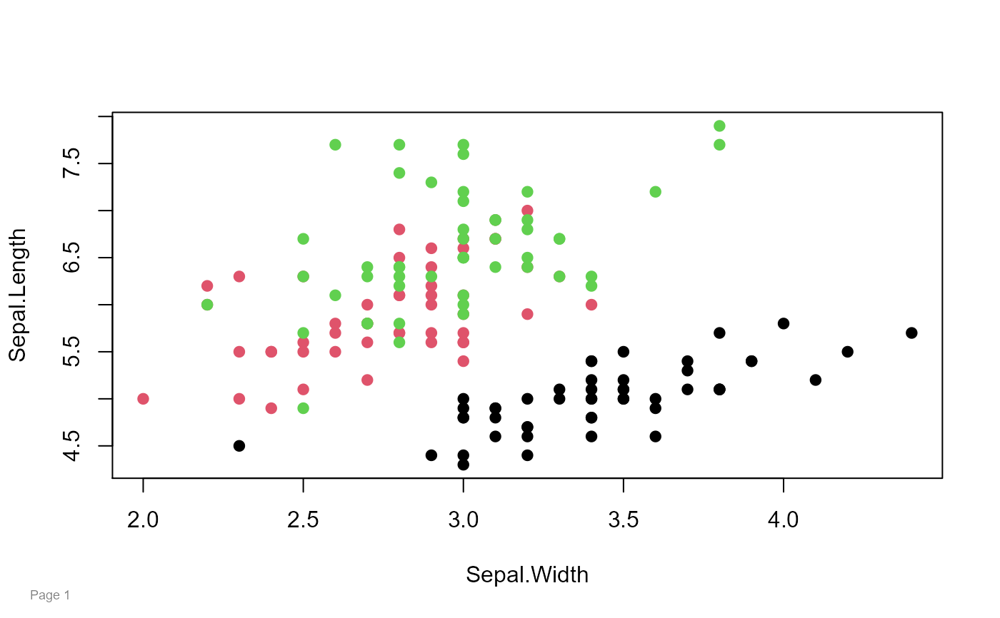
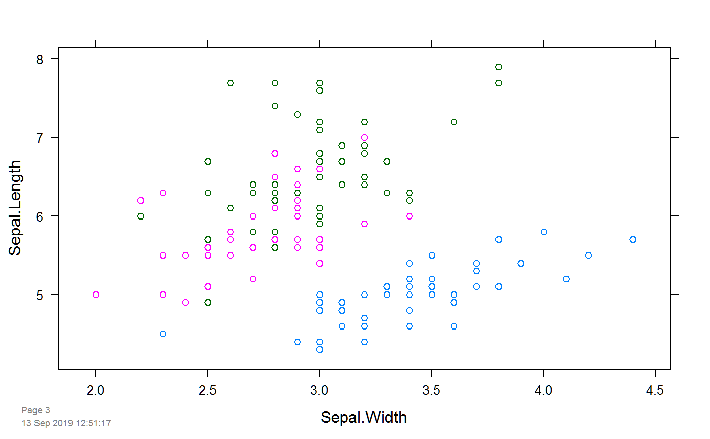
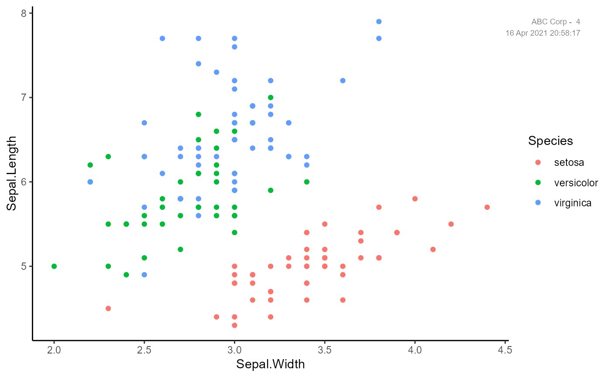
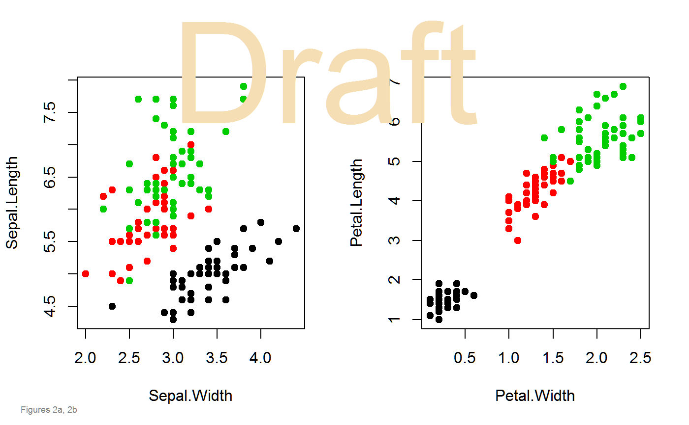

Put Page Numbers on Graphics
pagenum( num, text = "Page", date = FALSE, date.format, x = 0.03, y = 0.03, just = c("left", "bottom"), col = "gray50", cex = 0.75 ) setPagenum(num = 1) getPagenum()
| num | The number to put on the page. If no number is given,
the value of |
|---|---|
| text | The text to use in front of the page number. |
| date | If FALSE (default), do not add a date below the page number. |
| date.format | The format to use for the date. |
| x | Horizontal position of timestamp, in [0,1]. Default .03 |
| y | Vertical position of timestamp, in [0,1]. Default .03 |
| just | Jufstification. Default c('left','bottom') |
| col | Color to use for the text. |
| cex | Character expansion. Default 0.75. |
Returns the value stored by the global variable.
Returns the value of options()$pagenum
Use setPagenum to create a global variable with the page number.
If pagenum() is called without an argument, the value of
options()$pagenum is used to determine the page number.
Each time pagenum() is called, options()$pagenum is
automatically incremented by 1.
Mark Heckmann (2009). R: Good practice - adding footnotes to graphics. https://ryouready.wordpress.com/2009/02/17/r-good-practice-adding-footnotes-to-graphics/
Kevin Wright
pagenum()#>pagenum(date=TRUE)#># multiple figures, 'draft' watermark op = par(mfrow=c(1,2)) plot(Sepal.Length ~ Sepal.Width, data=iris, col=Species, pch=19) plot(Petal.Length ~ Petal.Width, data=iris, col=Species, pch=19)